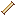
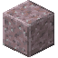

玻璃加工
玻璃加工
玻璃加工是将沙子转化为玻璃的过程。首先，你必须制作玻璃配料，共有四种类型：
1. 二氧化硅，来自白沙。
2. 赤铁质，来自黄沙、红沙或粉红沙。
3. 橄榄石质，来自绿沙或棕沙。
4. 火山质，来自黑沙。


4

然后，使用上述颜色的沙子之一，加上生石灰和一种钾碱即可制作玻璃配料。


亮红****
生石灰是制作玻璃配料的原料之一。它是一种粉末，通过加热助焊剂获得。

3
淡红****
玻璃配料还需要一种钾碱或等效物。可以使用苏打粉，这是一种由加热干海草或海带制成的粉末。硝石也可以使用。
专业工具
玻璃加工从玻璃配料开始，然后完成一系列步骤。这些步骤可能需要特定工具：


最重要的工具是吹管。它可以用黏土塑形，然后烧制成陶瓷吹管。

等级 0
陶瓷吹管很脆，使用时有可能破裂。更坚固的吹管可以用黄铜棒在砧上锻造而成。


玻璃压板可以用来将玻璃压平，可用木材制作。
配方: tfc:welding/jacks
玻璃夹钳可进行挤压，需要将两根黄铜棒焊接在一起。

宝石锯是用来执行锯割操作的。宝石锯还可以用来挖掘玻璃块和玻璃板而不使其损坏。
如何加工玻璃
首先，吹管上的玻璃必须加热到淡红色。然后，手持吹管，按住右键执行每个步骤。
吹
面朝正前方使用吹管。
拉伸
面朝正下方使用吹管。
平整
副手持有玻璃压板时使用吹管。
挤压
副手持有玻璃夹钳时使用吹管。
锯割
副手持有宝石锯时使用吹管。
翻转
副手持有羊毛布时使用吹管。